直近1週間の人気フィード
はてなブックマーク数を元に新着優先で並べ替え
新Linuxカーネル解読室 - パケット受信処理 ～IPレイヤーにおける受信処理～ 160
160 VA Linux エンジニアブログ
VA Linux エンジニアブログ
今回は、パケット受信処理 ～Ethernetドライバ ポーリング処理編～の続編として、受信パケットがIP層に到達した後の処理、特にルーティング処理を中心に解説します。
3日前
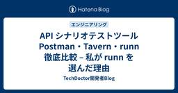
API シナリオテストツール Postman・Tavern・runn 徹底比較 – 私が runn を選んだ理由 147 TechDoctor開発者Blog
TechDoctor開発者Blog
はじめに はじめまして、テックドクターでバックエンドエンジニアをしている筧と申します。最近、弊社では API の品質を担保するために「API シナリオテスト」をプロダクトに導入しました。今回は、この API シナリオテストのツールである Postman(+Newman)、Tavern そして runn を比較し、最終的に runn を選んだ理由をご紹介します。 API シナリオテストとは？ API シナリオテストとはなんでしょうか？開発におけるテストといえば、ユニットテストや結合テスト、API テストや E2E テストなどをよく耳にします。しかしAPI シナリオテストという言葉はあまり聞き馴染…
2日前

Cline利用規約の適用範囲が明確に - 外部API利用時は適用外であることが公式回答で判明 68 サーバーワークスエンジニアブログ
サーバーワークスエンジニアブログ
先日公開したブログ記事「Cline利用におけるデータの取り扱いについて」には、多くの皆様から反響をいただきました。誠にありがとうございます。 blog.serverworks.co.jp icoxfog417（GitHubアカウント名）様がCline社に対して直接、ライセンスと利用規約の明確化を求める問い合わせを行っておりました。 github.com GitHub IssueでのCline社からの回答により、特に外部APIを利用する際のClineの利用規約の適用範囲について、重要な確認が取れましたので、本記事で詳しくお伝えします。 今回明らかになった重要なポイント 結論からお伝えすると、以下…
2日前
MCPにおけるセキュリティ考慮事項と実装における観点（前編） 157 GMO Flatt Security Blog
GMO Flatt Security Blog
MCP logo ©︎ 2024–2025 Anthropic, PBC and contributors | MIT license はじめに 本記事は、セキュリティエンジニアのAzaraこと齋藤とコーポレートセキュリティエンジニアのhamayanhamayanが、社内で行ったディスカッションを元に記述した記事です。 本記事は、MCP の利活用の際に考えるべき、セキュリティに関する考慮事項や、脅威の想定、実装時気にすべき観点などについてまとめたシリーズの前編になります。前編では、MCPに関する基本的な事項を扱いながら、利用者側の目線でMCPに対するセキュリティを考えていきます。社内での利活用…
3日前
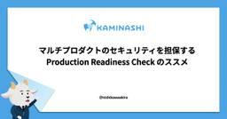
マルチプロダクトのセキュリティを担保する Production Readiness Check のススメ 44 カミナシ エンジニアブログ
カミナシ エンジニアブログ
どうもセキュリティエンジニアリングの西川です。禁酒しています。誘惑多い GW を超えたので勝ったも同然です。とはいえ、お酒は飲まずとも酒の場は好きなのでお気軽に誘っていただけると嬉しいです。 さて、今日はカミナシで去年より実施している Production Readiness Check についてお伝えできればと思っています。 Production Readiness Check とは何か プロダクションレディマイクロサービスという書籍が出ています。書籍の紹介に下記のようにあります。 UberのSRE（サイト信頼性エンジニア、サイトリライアビリティエンジニア）として、マイクロサービスの本番対応…
2日前
Cline利用におけるデータの取り扱いについて 351 サーバーワークスエンジニアブログ
【2025年5月16日追記】 利用規約について、Cline社からの回答により適用範囲が明確となりました。 以下の記事も合わせてご覧ください。 blog.serverworks.co.jp 【2025年5月16日追記ここまで】 これまでClineに関するブログ記事をいくつか公開し紹介してきました。 今回、利用規約の変更に伴うユーザーデータの取り扱いについて懸念が生じたため、本記事ではClineの利用規約の中でも特に注意すべき点と、弊社の対応についてご説明します。 Cline利用規約の変更点とデータ収集のリスク Clineの利用規約 (https://cline.bot/tos 更新日: 2025…
5日前

SmartHRのプロダクトマネージャー職にご興味をお持ちの方へ 38 SmartHR Tech Blog
SmartHR Tech Blog
これはなに？ SmartHRのプロダクトマネージャー（以下、PM）職にご興味をお持ちの方向けに、参考になりそうな情報をまとめたものです。下記から読みたいコンテンツを選んでください。 会社紹介 募集中のプロダクトマネージャーの求人 SmartHRのPMの魅力とは？ PMメンバーによる発信 SmartHRについて 会社紹介 会社紹介資料 募集中のプロダクトマネージャーの求人 現在は以下のポジションを募集しています。 プロダクトマネージャー（労務） プロダクトマネージャー（タレントマネジメント） プロダクトマネージャー（プロダクト基盤） プロダクトマネージャー（新規事業） テクニカルプロダクトマネー…
2日前
pg_query_goではじめるSQL解析 31 RAKUS Developers Blog | ラクス エンジニアブログ
RAKUS Developers Blog | ラクス エンジニアブログ
はじめに こんにちは、エンジニア３年目のTKDSです！ 今回はpg_query_goについて調べてみました。 業務で使用したこともあるのですが、改めて個人的に使ってみたいと思い、使い方をさくっと調べて試しました。 はじめに pg_query_goとは 簡単なサンプル 事前準備 中身をチラ見 実用例：SQLの操作を抽出 実用例：SQL実行種別のガードレール まとめ
1日前
Bet PR Agent 〜全自動コードレビューの夢〜 30 LayerX エンジニアブログ
LayerX エンジニアブログ
はじめまして、LayerX バクラク事業部 Platform Engineering 部 Enabling グループに新卒入社した shibutani と申します。バクラクでは自動コードレビューツールとして2023年からPR-Agentを導入しています。 しかし、導入から約2年が経過した現在、多くの開発者がPR-Agentのコメントを十分に活用できていないという課題に直面しています。その大きな要因として、導入後に十分なカスタマイズが行われていないため、各チームのコーディング規約やプロダクトに関する知識に基づいた適切な指摘がなされていない点が挙げられます。 また、昨今ではGitHub Copil…
1日前
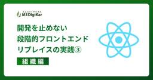
開発を止めない段階的フロントエンドリプレイスの実践 (3) 組織編 29 エムスリーテックブログ
エムスリーテックブログ
フロントエンドリプレイスにおいて、プロジェクトを推進する上でのチーム体制や、円滑なコミュニケーション、そして品質を維持するための取り組みなど、組織的な工夫について紹介します。
2日前
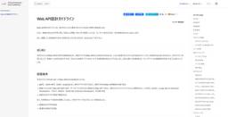
Web API設計ガイドラインを公開しました 285 フューチャー技術ブログ
フューチャー技術ブログ
<a href="https://future-architect.github.io/arch-guidelines/documents/forWebAPI/web_api_guidelines.html"><img
5日前
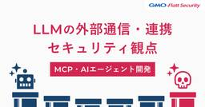
MCPやAIエージェントに必須の「LLMの外部通信・連携」におけるセキュリティ観点 181 GMO Flatt Security Blog
はじめに こんにちは。GMO Flatt Security株式会社 セキュリティエンジニアの山川(@dai_shopper3)です。 LLMはテキスト生成、要約、質問応答といった多様な用途に高い能力を発揮しますが、単体での活用にはいくつかの制約があります。そもそもモデル単体には、ただ入力された自然言語に対して文字列を生成するだけの機能しかありませんから、LLMをもとに自律的に行動するAIを作るには、外部と情報をやり取りし、具体的なアクションを実行するための手段が必要です。 また、モデルの知識は訓練データの収集時点で停止しており、それ以降の最新情報や特定の非公開情報も知りません（ナレッジカットオ…
4日前
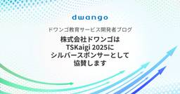
株式会社ドワンゴは TSKaigi 2025 にシルバースポンサーとして協賛します 21 ドワンゴ教育サービス開発者ブログ
ドワンゴ教育サービス開発者ブログ
株式会社ドワンゴは、2025/05/23 (金) - 24 (土) にて開催される日本最大級の TypeScript をテーマとした技術カンファレンス TSKaigi 2025 に、シルバースポンサーとして協賛いたします！ 当日は、教育事業本部所属のエンジニアがスポンサーブースにてご対応しますので、現地にお越しの方はぜひお気軽にお立ち寄りください 🙌 スポンサーブースでは、TypeScript や教育事業に関連するアンケートパネルを展示している他、限定ノベルティもご用意しております 🎁 株式会社ドワンゴの "教育事業" とは？ 私たちは、未来の「当たり前」の教育をつくるため、生徒・学生や教職員…
2日前
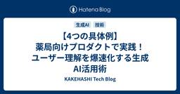
【4つの具体例】薬局向けプロダクトで実践！ユーザー理解を爆速化する生成AI活用術 20 KAKEHASHI Tech Blog
KAKEHASHI Tech Blog
ユーザー理解って大変 こんにちは。データが好きすぎる梶村です。 カケハシで薬局向けの在庫管理発注システムである「AI在庫管理」というプロダクトのPdMをしています。 プロダクト開発ではユーザー理解が一番大事だと分かっていても、実際に取り組むのは本当に大変です。薬局向けのプロダクトでは、店舗によって医薬品の在庫管理の運用や発注判断はさまざまであり、定性的にさまざまな店舗の方にヒアリングさせていただきながら、定量的に機能の利用状況を調査していくのは大変な作業です。 一方でPdMがヒアリングできる店舗や業務は限定的なので、営業やCSが認識している薬局の温度感とずれが生じてしまうと、「開発チームはユー…
2日前
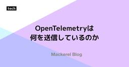
OpenTelemetryは何を送信しているのか 58 Mackerel ブログ #mackerelio
Mackerel ブログ #mackerelio
Mackerelチームでアプリケーションエンジニアをしている id:mrasu が、OpenTelemetryのシグナルについてProtocol Buffersの定義と計装を深堀りしていきます
4日前
【LangChain Interrupt参加レポート】Day2キーノート: CEO Harrison Chaseが語るAIエージェントの現在と未来 16 Generative Agents Tech Blog
Generative Agents Tech Blog
2025年5月13日から5月14日にかけてサンフランシスコで開催されたAIエージェント開発のテックイベント「LangChain Interrupt」。Day 2の幕開けは、LangChainのCEOであるHarrison Chase氏によるプロダクトキーノートでした。 Generative Agents Tech Blogではこれから複数回に分けて、イベントでのスピーチの模様をお届けします。 はじめに Harrison Chase氏は、LangChainのマスコットキャラクターであるオウムが宇宙を目指すユーモラスなAI生成ビデオと共に登壇。 「我々がこれをするのは、それが容易だからというわけで…
2日前
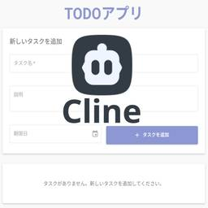
Cline × Amazon Bedrock でCRUDアプリのフルスタック開発をやってみた 52 Taste of Tech Topics
Taste of Tech Topics
はじめに こんにちは一史です。 先日神代植物公園に行きました、まだ藤の花が残っておりとても綺麗で癒されました。昨今、開発支援のAIエージェントとしてClineが話題になっています。 github.comClineはVisual Studio Code(VSCode)の拡張機能であり、単なるコード生成だけでなく、コマンド実行や動作確認・デバッグまでを一貫して行ってくれる点が特徴です。Clineは任意の生成AIモデルを指定し、コードを生成させることができます。 このためセキュアで実際の開発現場でも活用されるAmazon Bedrockと組み合わせることでビジネスシーンでの活用も可能となります。 今…
4日前
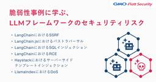
LLMフレームワークのセキュリティリスク - LangChain, Haystack, LlamaIndex等の脆弱性事例に学ぶ 166 GMO Flatt Security Blog
はじめに こんにちは。GMO Flatt Security株式会社セキュリティエンジニアの森(@ei01241)です。 近年、大規模言語モデル（LLM）の進化により、チャットボット、データ分析・要約、自律型エージェントなど、多岐にわたるAIアプリケーション開発が進んでいます。LangChainやLlamaIndexのようなLLMフレームワークは、LLM連携や外部データ接続などを抽象化し開発効率を向上させる一方、その利便性の背後には新たなセキュリティリスクも存在します。 本稿では、LLMフレームワークを利用・開発する際に発生しやすい脆弱性を具体的なCVEを交えて解説し、それぞれ脆弱性から教訓を学…
5日前
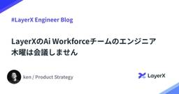
LayerXのAi Workforceチームのエンジニア、木曜は会議しません 21 LayerX エンジニアブログ
こんにちは、LayerXのAi Workforce事業部 開発グループでProduct Strategyを担当しているワカマツ ケンです。 これまで米国本社のSalesforce、Cisco、Adobeなどで20年以上にわたりシリコンバレーでプロダクト開発に携わってきました。特にSalesforceではAI機能「Einstein」の開発に関わり、プロダクトとAIの融合に情熱を注いできました。 2016年からはSalesforce Japanに出向し、日本市場向けのプロダクト戦略を推進。Salesforce JapanのHead of Productとして、グローバル×日本ローカルの橋渡し役を務…
2日前
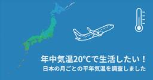
【GIS】365日20℃生活☀️日本の平年気温データから適温で暮らし続ける方法を探る 138 朝日新聞社 メディア研究開発センター
朝日新聞社 メディア研究開発センター
はじめにメディア研究開発センターの石井です。データジャーナリズムのためのデータ分析、文章校正AI Typolessの開発などを担当しています。続きをみる
6日前
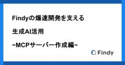
Findyの爆速開発を支える生成AI活用 ~MCPサーバー作成編~ 125 Findy Tech Blog
Findy Tech Blog
こんにちは。 ファインディ株式会社 で Tech Lead をやらせてもらってる戸田です。 現在のソフトウェア開発の世界は、生成AIの登場により大きな転換点を迎えています。 GitHub Copilotやチャットベースの開発支援ツールなど、生成AIを活用した開発支援ツールが次々と登場し、開発者の日常的なワークフローに組み込まれつつあります。 そのような状況の中で、MCPというプロトコルが話題となっていることは読者の皆さんもご存知かと思います。 そこで今回は、弊社の開発組織でのMCPサーバーの導入と実装、そして実績について紹介します。 それでは見ていきましょう！ MCPとは 導入 実装 実績 動…
6日前
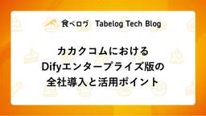
カカクコムにおけるDifyエンタープライズ版の全社導入と活用ポイント 74 Tabelog Tech Blog
Tabelog Tech Blog
目次 目次 はじめに Dify導入の背景 エンタープライズ版の機能 マルチワークスペース SSO Kubernetesデプロイ Admin API カカクコムの事例紹介 ワークスペース設計 運用体制 アプリの公開方法 サンドボックスワークスペース Google Cloudによるインフラ構築 エンタープライズ版の運用における課題 全社導入の成果と課題 まとめ はじめに こんにちは。AIトランスフォーメーション推進部に所属している遠藤怜です。 カカクコムでは「Dify」のエンタープライズ版を全社のAI活用プラットフォームとして導入しました。 通常のDify（コミュニティ版）にはない企業向けの機能が…
4日前
生成AI向けのドキュメント変換技術 rokadoc 〜高い精度をどのように実現しているのか〜 59 NTT Communications Engineers' Blog
NTT Communications Engineers' Blog
こんにちは。イノベーションセンター Generative AI チームの安川です。 今回は私の所属するチームで開発しているrokadocというプロダクトの内部で利用している技術要素に重点を置いて紹介します。 本記事では「ドキュメント変換技術」であるrokadocについて、内部で利用している技術について紹介します。 rokadocはドキュメントをアップロードするとそれを生成AIで扱いやすいテキストへ変換するという機能を持ちます。 ユーザはドキュメントの内容に応じて自身で複雑な処理を考える必要がないというメリットがありますが、一方でその内部ではレイアウト解析やAI-OCRなどの複雑な処理を行ってい…
5日前
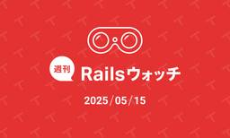
週刊Railsウォッチ: 書籍『Rails Scales!』、RubyにNamespaceがマージほか（20250515） 10 TechRacho
TechRacho
こんにちは、hachi8833です。 週刊Railsウォッチについて 各記事冒頭には🔗でパーマリンクを置いてあります: 社内やX.comでの議論などにどうぞ 「つっつきボイス」はRailsウォッチ公開前ドラフトを（鍋のように）社内有志でつっついたときの会話の再構成です👄 お気づきの点がありましたら@hachi8833までメンションをいただければ確認・対応いたします🙏 TechRachoではRubyやRailsなどの最新情報記事を平日に公開しています。TechRacho記事をいち早くお読みになりたい方はTwitterにて@techrachoのフォローをお願いします。また、タグやカテゴリごとにRSSフィードを購読する […]The post 週刊Railsウォッチ: 書籍『Rails Scales!』、RubyにNamespaceがマージほか（20250515） first appeared on TechRacho.
2日前
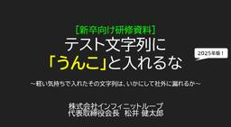
今年も出たぞ！「テスト文字列にうんこ入れるな」研修資料2025年版！【祝・30万View突破】 44 技術ブログ – infiniteloop
技術ブログ – infiniteloop
こんにちは松井です。今は会長職をやっております。 もう結構前になりますが、2021年の新卒研修向けに「テスト文字列に”うんこ”と入れるな」という資料を作成しました。おかげさまで多くの方に読んでいただいたようで、現時点で累…
4日前
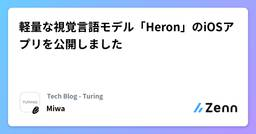
軽量な視覚言語モデル「Heron」のiOSアプリを公開しました 42 Tech Blog - Turingのフィード
Tech Blog - Turingのフィード
完全自動運転の実現を目指すTuringでは、Webスケールのデータセットで学習した大規模視覚言語モデル（VLM）の持つ「常識」を利用することで、幅広い状況に対応できる自動運転モデルの開発を実現できると考えています。この目標のもと、基盤AIチームでは2023年から視覚言語モデル「Heron」の開発に取り組んできました。https://www.watch.impress.co.jp/docs/news/1529946.htmlVLMを自動運転に活用していく上で重要な要件の一つが「軽量」であることです。Turingでは経済産業省およびNEDOが推進する日本の生成AIの開発力強化に向けた...
5日前

ある日、フロントエンドエンジニア不在のチームに配属された俺達は 15 SmartHR Tech Blog
こんにちは。データ連携チームでフロントエンドエンジニアをしている ushiboy です。 この記事では、2024 年 9 月入社でチームに参加した筆者が、データ連携プロダクトのフロントエンドのコードベースで行なった半年間の取り組みについてご紹介します。 SmartHR ではプロダクトや機能ごとにチームが編成され、各チームに 1 名～ 2 名程度のフロントエンドエンジニアが在籍しています。 組成されて間もないチームの場合、フロントエンドエンジニアが不在の場合もあります。 筆者が配属された時点でデータ連携プロダクトはすでにリリースされており日々開発が続いていましたが、これまでフロントエンドエンジニ…
3日前
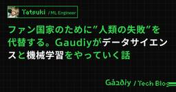
ファン国家のために"人類の失敗"を代替する。Gaudiyがデータサイエンスと機械学習をやっていく話 15 Gaudiy Tech Blog
Gaudiy Tech Blog
はじめまして。ファンと共に時代を進める、Web3スタートアップ Gaudiy の tatsuki (@tatsukiiine)と申します。 Gaudiyは、誰もが好きや夢中で生きられる社会「ファン国家」の創造をビジョンに掲げ、その実現をエンタメ領域から目指しています。 note.com この「ファン国家」は、単一の巨大なコミュニティというよりは、多様な価値観や熱量をもっている無数の「マイクロコミュニティ」が相互に繋がり合うネットワークのようなものです。それは、情熱、創造性、ビジネス、テクノロジー、そして多くの人々の相互作用が渦巻く、複雑でダイナミックなエコシステムになるはずです。 しかし、この…
4日前
Amazon Bedrockを活用したPCI DSS要件の省力化 32 MIXI DEVELOPERS Tech Blogのフィード
1. はじめに 1.1 PCI DSSについてMIXIでは、全社ID・決済基盤システムを内製で開発・運用しており、各種決済手段を社内で開発している各サービスから統合的なインタフェースで利用できるようになっています。利用しているサービスの一例がMIXI MとモンストWebショップです。この決済基盤システムは決済代行の役割を担っており、クレジットカードで決済する時は、カード会員データを保持しながら決済プロバイダと通信しています。そのため、MIXIは、カード会員データを安全に取り扱うためのセキュリティ基準であるPCI DSSを2019年より取得しています。 1.2 要件10.4...
5日前
SREチームを作るうえで大切にしていること 27 株式会社ヘンリー エンジニアブログ
株式会社ヘンリー エンジニアブログ
株式会社ヘンリーでSREをしている戸田（id:eller）です。ひとりめSREとしてヘンリーにジョインしてから約3年、現在ではSREも3人のチームになりました。それでも事業計画に対してはまだ足りていないので、SREエンジニア採用を継続的に行っています。 私がSREチームを作るのは前職から続けて2回目なのですが、いずれの場合でも重要だと考えていることがあり、カジュアル面談でもよく話しています。今回はそのエッセンスをまとめて、同業はもちろん弊社への転職を検討されている方にも参考にしていただければと思っています。 前提としての「チームの目的」 チームを作っていくためには、そのチームの目的や存在意義を…
4日前
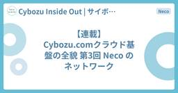
【連載】Cybozu.comクラウド基盤の全貌 第3回 Neco のネットワーク 27 Cybozu Inside Out | サイボウズエンジニアのブログ
Cybozu Inside Out | サイボウズエンジニアのブログ
はじめに クラウド基盤本部でサイボウズの Kubernetes 基盤である Neco の開発・運用を担当している杉浦です。 前回の記事では Neco について、サーバ管理の方法や自社製の Kubernetes エンジンである CKE を紹介しました。今回は Neco のネットワークに注目して、CKE によって構築した Kubernetes クラスタがどのようにしてクラスタ内外と通信しているかを紹介します。 Kubernetes クラスタのネットワークについて Neco のネットワークについて紹介する前に、まず一般的な Kubernetes におけるネットワークについて紹介します。Kuberne…
5日前
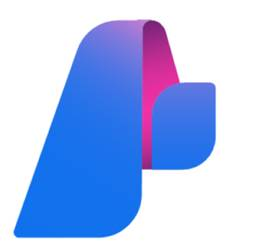
Azure AI FoundryのServerless APIでPhi-4-miniを簡単にFine Tuningする 24 Taste of Tech Topics
こんにちは。データサイエンスチームYAMALEXの@Ssk1029Takashiです。 (YAMALEXについて詳細はこちらをぜひご覧下さい。) www.acroquest.co.jpつい先日Phi-4-reasoningというモデルがMicrosoftから発表されました。 軽量な事前学習済み言語モデル（SLM）も性能が上がってきて利用されることが増えてきています。 SLM は量子化などを施すことで、ハイエンド GPU を使わずとも動かせる点が利点です。 そのため、外に出せないデータを扱ったり、通信できない環境で利用されることが多いとされています。SLMを扱う場合に必要になるのはFine Tu…
5日前
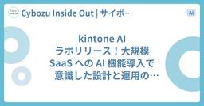
kintone AI ラボリリース！大規模 SaaS への AI 機能導入で意識した設計と運用の工夫 10 Cybozu Inside Out | サイボウズエンジニアのブログ
こんにちは！ kintone 開発の生成 AI チームで EM をしている立山です。 今回は、4/15 にリリースした kintone AI ラボの設計・運用の工夫についてお話しします。 はじめに kintone AI ラボでは、専門知識がなくても誰でも活用できる AI をコンセプトに、 kintone 内のデータ活用を促進する AI 機能や、kintone の利用者の裾野を広げる AI 機能を中心に提供しています。 現在は、以下の 2 つの生成 AI 機能を提供しています： 検索 AI：kintone 内のデータで簡単に RAG（Retrieval-Augmented Generation）…
3日前
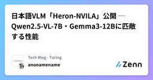
日本語VLM「Heron-NVILA」公開 ─ Qwen2.5-VL-7B・Gemma3-12Bに匹敵する性能 37 Tech Blog - Turingのフィード
はじめにチューリングの横井です。チューリングでは視覚と言語を統合的に理解できるAIを自動運転に応用するため、Vision Language モデル（VLM）「Heron」の開発に取り組んでいます。このたび、経済産業省およびNEDOが推進する日本の生成AIの開発力強化に向けたプロジェクト「GENIAC」第2期の支援のもと開発したVLM「Heron-NVILA」15B, 2B, 1B, 33Bを公開しました。https://huggingface.co/turing-motors/Heron-NVILA-Lite-15Bこの記事では開発したHeron-NVILAのアーキテクチャ、学...
6日前
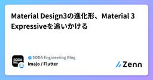
Material Design3の進化形、Material 3 Expressiveを追いかける 5 SODA Engineering Blogのフィード
2025年5月13日にGoogleがMaterial 3 Expressiveが発表されました。こちらはMaterial Design3の進化形に位置します。この記事ではMaterial 3 Expressiveとはなにか、どんなところが変わったのかをまとめています。 Material 3 Expressiveとは?Expressiveとはそのまま翻訳すると「表現力豊かな」となります。つまりMaterial Design3をより感情に訴えかけるUXにしたのがMaterial 3 Expressiveの位置付けです。前述した通り、Material Design4ではなく、あくまで...
3日前
PdM像は十人十色──「我々は何者か」 33 RAKUS Developers Blog | ラクス エンジニアブログ
どうも、稲垣です。 先日、PM、PdM向けイベントを0からみんなで作る会に参加しました 参加のきっかけは、これまでとは少し違った雰囲気のイベントだったこと。それくらいの軽い気持ちでしたが、参加してみると、たくさんの気づきがありました。 せっかくなので、ブログにまとめてみようと思います。 思ったことを、感じたままに綴ります。読んでくださる皆さんにとって、何かしらの学びや気づきになれば嬉しいです。 前置きが長いですが是非！（イベントの内容については、ブログの後半でレポート） プロダクトマネージャーの解像度のあげ方 そもそもプロダクトマネージャーって何者？ 「我々は何者か？」を明らかにすること ラク…
5日前
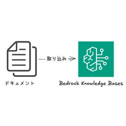
Amazon Bedrock Knowledge Basesでカスタムデータソース＋直接取り込みAPIを利用する 31 Taste of Tech Topics
こんにちは。大塚です。AIの進化スピードに驚かされる毎日です。 生成AIだけでなく、データ活用の仕組みもどんどん進化していますね。今回は、昨年12月にサポートされたBedrock Knowledge Basesのカスタムデータソースとドキュメントの直接取り込みAPIを試してみたいと思います！aws.amazon.com 1. はじめに 2. カスタムデータソース＋直接取り込みAPIの概要とメリット カスタムコネクタとは？ ドキュメントの直接取り込みとは？ 3. 実際に試してみる 事前準備（ナレッジベースの作成） AWSマネジメントコンソールからドキュメントを投入 APIからドキュメントを投入 …
6日前
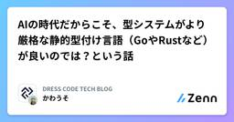
AIの時代だからこそ、型システムがより厳格な静的型付け言語（GoやRustなど）が良いのでは？という話 31 DRESS CODE TECH BLOGのフィード
はじめにCursorのようなAIのコードエディタがめちゃくちゃ進化してきている、こんな時代だからこそ静的型付け言語、特に厳格な静的型付け言語であるRustとの相性が良いのでは？という話をポエム的に書いてみます。この記事ではあえてRustに特化して比較や検討をしているのは、個人的な好みの問題です笑今の現場では静的型付け言語であるTypeScriptを使っているけど、厳格な静的型付け言語ではないし、実装されているコードも現場や人によって異なることが多くて、AIと共創していくことを考えたときにベターな言語があるんじゃないかって思ってつらつら書いてみます。（TypeScriptって本...
6日前
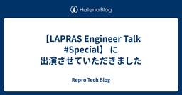
【LAPRAS Engineer Talk #Special】 に出演させていただきました 8 Repro Tech Blog
Repro Tech Blog
こんにちは、Repro Booster のプロダクトマネージャーの Edward Fox です。 先日LAPRASさんの主催する【LAPRAS Engineer Talk】に出演させていただき、その動画が公開されたのでお知らせです。 LAPRAS CTOの興梠さんからのキラーパスがテンポよく繋がり話が非常に盛り上がったため、全体で50分ほどの尺になり、動画は前後編に分かれていますｗ 前編では Repro Core Unit の 村上より、Reproの大規模なトラフィックを支えるデータ処理基盤について説明しています。 【前編】事業を支えるサービス基盤のアーキテクチャと今後の挑戦 前編の推しポイン…
3日前
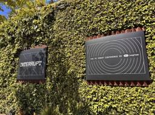
LangChain Interrupt Day 1 参加レポート！メール対応エージェントを中心としたハンズオンが中心の一日に 8 Generative Agents Tech Blog
日本時間2025年5月14日から15日にかけて、サンフランシスコにてAIエージェント開発に特化したテックイベント「LangChain Interrupt」が開催中されています。 ジェネラティブエージェンツはLangChainアンバサダーとして本イベントに現地参加しています。 interrupt.langchain.com 本記事では、現地参加して得られたDay 1の模様をダイジェストでお届けします。Day 1は、メールエージェントを題材に、LangChainエコシステムの各コンポーネント（LangGraph, LangSmithなど）を駆使して、アイデアから本番稼働可能なエージェントを構築して…
4日前

RubyのNamespace機能を試す 29 Money Forward Developers Blog
Money Forward Developers Blog
Rubyの開発版にNamespaceが導入されました。1つのRubyプロセスの中に分離された名前空間を提供することが目的の機能で、先日開催されたRubyKaigi 2025でも大きなトピックの1つとなっていました。 github.com この記事では、Namespaceの目的と使い方を簡単に見ていこうと思います。より詳しく知りたい方は、記事末尾の参考資料を読んだり、ぜひ手元で動かしてみたりしてください。 Namespaceの目的 Namespaceの目的は、大きく以下の3つです。これはNamespaceが提案されているチケットに書かれています。 ライブラリ間での名前の衝突を避けること 意図しな…
5日前
マルチ DBMS ベンチマークツール BenchBase を MySQL で使ってみる 27 スマートスタイル TECH BLOG
スマートスタイル TECH BLOG
はじめに 今回の記事では、BenchBase というベンチマークツールについて紹介してみたいと思います。 弊社では、データベースの性能評価やワークロードのシミュレーション、検証にベンチマークツールをよく使用しています。 […]
6日前
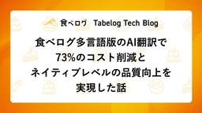
食べログ多言語版のAI翻訳で73%のコスト削減とネイティブレベルの品質向上を実現した話 25 Tabelog Tech Blog
はじめに プロジェクト背景：インバウンド需要と翻訳課題 AIモデル選定：性能評価とコスト分析 実験詳細 評価方法 データセット 評価対象モデル 評価結果 翻訳対象：多様な言語アイテムの分析 代表的な5つのパターン毎のアプローチの詳細 店名 支店名 メニュータイトル メニュー説明 口コミ内容 性能改善の知見 英訳ルールとfew-shotによる基礎性能の確保 文脈情報の効果的な活用 固有名詞処理の体系化 日本語特有表現への対応 GPT-4o miniで十分な性能に持っていくための工夫 コストを節約する工夫 導入効果 今後の展開 多言語への展開 未翻訳アイテムへの対応 最新技術のキャッチアップと継続…
6日前
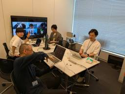
社内で機械学習コンペ開催！ワイワイ楽しんだ1日をレポート 22 エムスリーテックブログ
こんにちは、AI・機械学習チームの氏家と農見です。 エムスリーでは、東京のみならず福岡・関西など全国各地にメンバーがおり、開発を進めています。 ただ、チーム全員での交流も大事ということで、AI・機械学習チームでは四半期に一度のペースでチーム全員で集まって様々なイベントを開催しています。 今回は、そのイベントの最新版として機械学習コンペを開いたので、その様子をご紹介します！ 当日の様子 ちなみに、前回はGameDayと称して、開発環境で人為的に発生させた障害に対して、その対応のシミュレーションをしました。 こちらの記事で当日のワイワイした雰囲気を感じていただけるので、ぜひこちらもご覧ください！ …
5日前
「刺さる」展示はまず差をつくる。でもちゃんと馴染ませる──RubyKaigi 2025でのブース設計戦略 3 Pepabo Tech Portal
Pepabo Tech Portal
GMOペパボの事業開発部で（自称）デザインエンジニアをやっている gyugyu です。好きな豆腐は島豆腐です。この記事は、RubyKaigi 2025の展示ブースで「VTuber配信体験」という異質な企画を持ち込んだ背景と設計意図を、技術者文化との接続という観点から振り返るものです。きっかけは「違和感から始まる体験」今回のブースは、VTuberとして配信を体験できるコーナーを提供し、そこに弊社が開発するサービスである Alive Studio を使って画面上に素材を配置できるというものでした。VTuberとして配信するための準備は全てそろった状態にしておき、ブースに来訪された方は一切の準備が不要で、すぐに配信を始めていただけるという環境を作りました。RubyKaigiのような技術カンファレンスにおいて、こうした体験は明らかに異質であり、来場者にとっては「何これ？」と足を止める導線になります。技術カンファレンスのブース展示といえばエンジニア向けプロダクトやプロダクトの実装技術という観点になりがちですが、明確に異なる切り口を提示することで差異化を図ることができました。技術カンファレンスとい
2日前

Google認証機能を持つApache HTTP Webサーバを構築してみた 16 SIOS Tech. Lab
SIOS Tech. Lab
こんにちは、新卒2年目になりました、伊藤です。昨年は、Azure Static Web AppsでGoogle認証機能を持つアプリケーションを作成する方法を紹介しました。https://tech-lab.sios.jp/ ...Google認証機能を持つApache HTTP Webサーバを構築してみた first appeared on SIOS Tech. Lab.
6日前
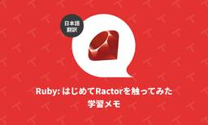
Ruby: はじめてRactorを触ってみた学習メモ（翻訳） 4 TechRacho
概要 元サイトの許諾を得て翻訳・公開いたします。 英語記事: Ractor - getting started | Arkency Blog 原文公開日: 2025/03/04 原著者: Mirosław Pragłowski 参考: アクターモデル - Wikipedia Ruby: はじめてRactorを触ってみた学習メモ（翻訳） 本記事は私の学習メモです。Ractorを使うと以下の警告が英文で表示されることをお忘れなく。 警告: Ractorは実験的機能であり、今後のRubyバージョンで変更される可能性があります。また、実装上の問題も多数あります。 警告を終えたので、それでは始めましょう。 🔗 アクターを作 […]The post Ruby: はじめてRactorを触ってみた学習メモ（翻訳） first appeared on TechRacho.
3日前
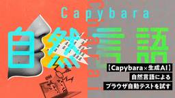
【Capybara×生成AI】自然言語によるブラウザ自動テストを試す 4 GMO Developers
GMO Developers
はじめに 今回紹介する生成AIを活用した自動テストツールは「Charai」という名前でGitHubに公開されています。Charai(Chat + Ruby + AI) driver for Capybara. Proto […]
4日前
Pydantic AIで作る！実践Text-to-SQLシステム構築ガイド 〜自然言語によるデータ抽出の自動化で分析業務を効率化〜 13 Ubie テックブログのフィード
こんにちは、Ubieでアナリティクスエンジニア/データアナリストをしているmatsu-ryuです。普段は、Ubieが提供するサービスから得られる様々なデータを活用し、「テクノロジーで人々を適切な医療に案内する」というミッションの実現に向けて取り組んでいます。皆さんの職場では、こんなやり取りはありませんか？「先月のカテゴリ別売上トップ3、都道府県別で出せますか？」「レビュー評価が星1つの商品のリストと、その商品を買ったユーザーのリストをお願いします。」データドリブンな意思決定が重視される昨今、こうしたデータ抽出・分析の依頼は日常的に発生します。しかし、その裏側では多くの組織が共通...
6日前

Yahoo!ショッピング：データ基盤における次世代クエリエンジン（Spark/Trino）移行の取り組みについて 3LINEヤフー Tech Blog
はじめに本ブログシリーズでは、Yahoo!ショッピングのデータ分析基盤を最適化するために取り組んだ大規模プロジェクト――Apache HiveからTrinoとApache Sparkへの移行――につい...
4日前
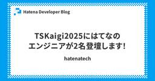
TSKaigi2025にはてなのエンジニアが2名登壇します！ 3 Hatena Developer Blog
Hatena Developer Blog
2025年５月23日-5月24日にベルサール神田でTSKaigi 2025が開催されます！ 2025.tskaigi.org はてなはブロンズスポンサーとして協賛しています。また、id:cateiruがスタッフとして関わっています。 さらに、エンジニア2名のプロポーザルが採択され、id:mizdraとid:susisuが登壇します！！ 登壇内容を以下に簡単にご紹介します。 また、イベントスタッフとして参加しているid:cateiruからのコメントもご紹介します。 id:mizdra フロントエンドエキスパートの id:mizdra です。私は2日目に「TypeScript Language S…
4日前
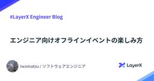
エンジニア向けオフラインイベントの楽しみ方 5 LayerX エンジニアブログ
こんにちは。バクラクビジネスカード開発チーム エンジニアの iwamatsu です。 皆さんは勉強会や Meetup などのオフラインイベントに参加したことはありますか？ ご存知の通り昨今は AI の話題で持ち切りですが、それに伴って今各所で AI 活用事例を共有し合うイベントが盛んに開催されており、所属を超えたオフラインでの交流が今まで以上に活発になってきているなと感じています。 でもオフラインイベントに参加するのって最初ちょっとハードル高くないですかね？どうやって参加したら良いんだろうとか、懇親会で孤立したらどうしようとか。 自分も以前はそういったイベントに参加したことがなかったんですが、…
4日前
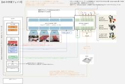
ロボティクス領域の VLA モデル「π0」の仕組みを理解する 7 ABEJA Tech Blog
ABEJA Tech Blog
こんにちは！ABEJA で ABEJA Platform 開発を行っている坂井（@Yagami360）です。 近年の ChatGPT 等の LLM の飛躍的な発展とマルチモーダル化の流れに伴い、ロボティクス領域においても LLM を活用して、テキストでロボット制御できるようになってきているようです。 LLM に対して画像を入力もできるようにして｛画像・テキスト｝でのマルチモーダル化したモデルを VLM [Vision-Language Model] といいますが、ロボティクス制御等で LLM を活用できるように更にこれを拡張して、ロボットのアーム制御などの行動ベクトルも入力できるようにして｛行…
6日前
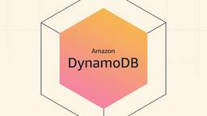
DynamoDBコスト削減のための基本的な施策4点 7 フューチャー技術ブログ
<img src="/images/20250512a/top.jpg" alt="" width="800" height="450"><h1 id="はじめに"><a href="#はじめに" class="headerlink"
6日前

マルチプラットフォームのドキュメントを管理する一つの方法、シングルソーシング 5LINEヤフー Tech Blog
こんにちは。LINE Plus Tech Content StrategyチームのSung Chang Haです。私たちのチームはテクニカルライターで構成されています。LINE Plusで開発したさま...
6日前
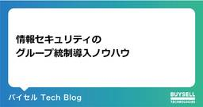
情報セキュリティのグループ統制導入ノウハウ 3 バイセル Tech Blog
バイセル Tech Blog
はじめに こんにちは。テクノロジー統括本部CTO室の内田です。 私は2023年12月にバイセルへ中途入社し、現在セキュリティグループのグループマネージャーを務めています。主な責務は、「プロダクトセキュリティ」と「社内の情報セキュリティ」の両面から、全社及びグループ会社を含めたリスクマネジメントを推進することです。 入社からこれまで ～セキュリティ対策推進と成果～ バイセルではセキュリティ面の対応指標・可視化について、Secure SketCH（セキュアスケッチ）というセキュリティ評価サービスを利用しています。入社後の2024年はセキュリティ面の対応指標の可視化や改善に主に取り組んできました。詳…
4日前
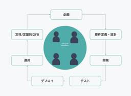
なぜフルサイクルエンジニアを目指すのか 3 BASEプロダクトチームブログ
BASEプロダクトチームブログ
はじめに BASE BANK Departmentで開発責任者をしている斉藤です。 BASE BANK Departmentは金融領域の事業を担当しています。 Departmentに在籍しているエンジニアは10名ほどです。 私たちは全員がフルサイクルエンジニアを目指しており、この記事ではその理由を紹介します。 フルサイクルエンジニアとは 私たちが考えるフルサイクルエンジニアとは、ソフトウェアライフサイクルの全域に責任を持ち、ユーザーに価値を届けることにフォーカスするエンジニアのことです。 先日、同僚のDoarakkoが書いた「フルサイクルエンジニアとしてどう事業に貢献するか」に記載のあった表現…
5日前
【暗号のおねぇさんこと酒見 由美】「高機能暗号とそれを支える物理・視覚暗号シンポジウム」に登壇しました 4 GMO Developers
GMOサイバーセキュリティ byイエラエをはじめとするGMOインターネットグループでは、「ネットのセキュリティもGMO」をスローガンに、セキュリティ分野でさまざまな取り組みを進めています。2025年2月には、世界初の24 […]
6日前
ペネトレーションテスト初心者が生成AIを活用して Hack The Box でペネトレーションテストを勉強してみた話 4
 ラック・セキュリティごった煮ブログ
ラック・セキュリティごった煮ブログ
デジタルペンテスト部の吉原です。 普段はプラットフォーム診断で診断作業や新規診断スクリプトを開発したりしています。 そんな私ですが、今回は、ペネトレーションテスト初心者である私が生成AIを使ったりして、Hack The Box （以下 HTB）でペネトレーションテストを勉強してみたお話を紹介したいと思います。 これからセキュリティ技術やペネトレーションテストを勉強してみたいけど、何か難しそう！という方々の参考になれば幸いです。 免責事項 当記事の内容は教育・学習およびセキュリティの向上目的で執筆されており、サイバー攻撃行為を推奨するものではありません。 第三者が所有する資産に管理者の許可なく…
6日前
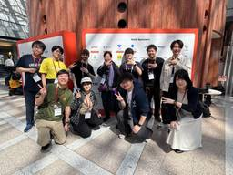
RubyKaigi 2025 の振り返り会を開催しました [前編] 3 freee Developers Hub
freee Developers Hub
こんにちは! 関西でfreee販売の開発を担当しております bucyou こと川原です。 RubyKaigi 2025 の閉幕から3週間が経ちました。これまでに、Drinkup イベントの様子やLTの内容について紹介してきましたが、今回は社内向けに実施したトークからの学びの共有会のダイジェストをお送りします。 RubyKaigi 2025 のスポンサーボードの前で 今までの RubyKaigi 2025 関連の記事はこちら developers.freee.co.jp developers.freee.co.jp 前半の登場人物 hachi: RubyKaigi 2025 ではLT登壇やDJに…
5日前
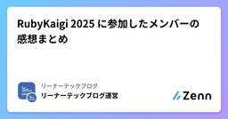
RubyKaigi 2025 に参加したメンバーの感想まとめ 3 リーナーテックブログ運営さんのフィード
Leaner 開発チームの黒曜(@kokuyouwind)です。松山で開催された RubyKaigi 2025、めちゃくちゃ楽しかったです。Leaner Technologies では初めて ボードゲームナイトを開催させていただき、またスポンサーブースも初出展しました。ボードゲームナイトにご参加いただいた皆様、ブースなどで交流させていただいた皆様、なにより運営の方々とすべての参加者の皆様、本当にありがとうございました。 メンバーに RubyKaigi 2025 の感想を聞いてみようLeaner Technologies からは総勢 15 名が現地参加させていただきました[1]...
5日前
RubyKaigi 2025 に参加したメンバーの感想まとめ 3 リーナーテックブログのフィード
Leaner 開発チームの黒曜(@kokuyouwind)です。松山で開催された RubyKaigi 2025、めちゃくちゃ楽しかったです。Leaner Technologies では初めて ボードゲームナイトを開催させていただき、またスポンサーブースも初出展しました。ボードゲームナイトにご参加いただいた皆様、ブースなどで交流させていただいた皆様、なにより運営の方々とすべての参加者の皆様、本当にありがとうございました。 メンバーに RubyKaigi 2025 の感想を聞いてみようLeaner Technologies からは総勢 15 名が現地参加させていただきました[1]...
5日前
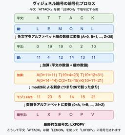
眠れなくなるほど面白い暗号化技術 第2回 - 300年間暗号学者を欺き続けた魔法の表 3 APC 技術ブログ
APC 技術ブログ
はじめに こんにちは、クラウド事業部の丸山です。 前回のシーザー暗号はいかがでしたか？ 単純ながらも暗号の基本概念を学ぶ絶好の入門編でしたね。 しかし歴史的に見れば、シーザー暗号の致命的な弱点はすぐに明らかになりました。 文字の出現頻度を分析するだけで簡単に解読できてしまうのです。 そこで今回は、この弱点を巧妙に克服した「ヴィジュネル暗号」のをご紹介します。 16世紀に考案されたこの暗号は、なんと300年もの間「解読不能な暗号」として君臨し、 「le chiffre indéchiffrable」（解読不能の暗号）という異名まで与えられました。 一体どのような仕組みが、当時の最高の頭脳たちをこ…
6日前